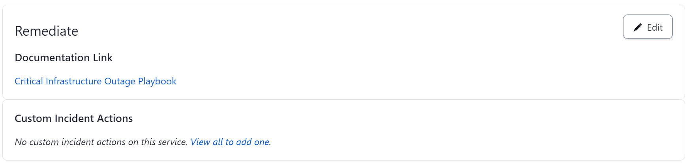
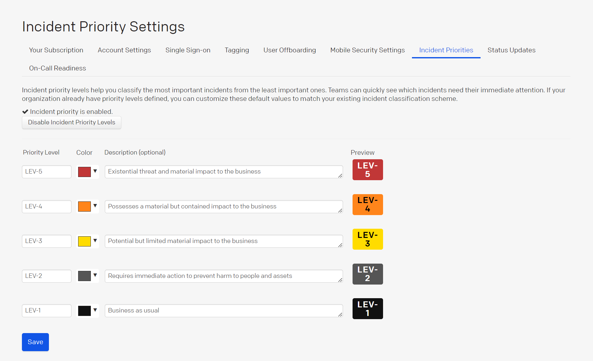
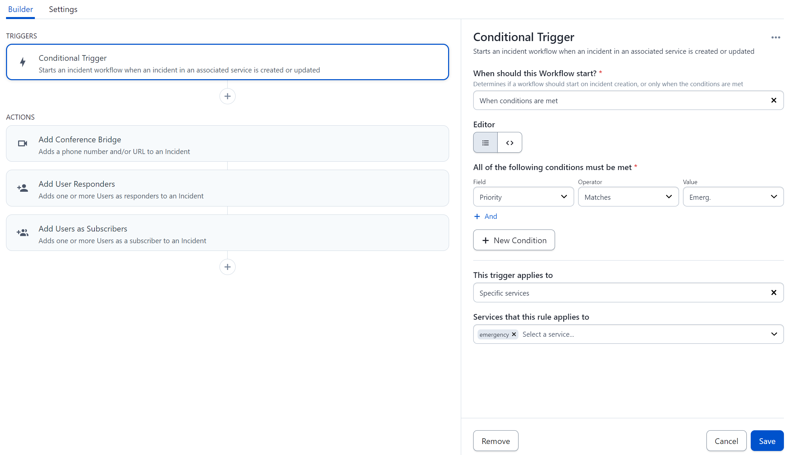
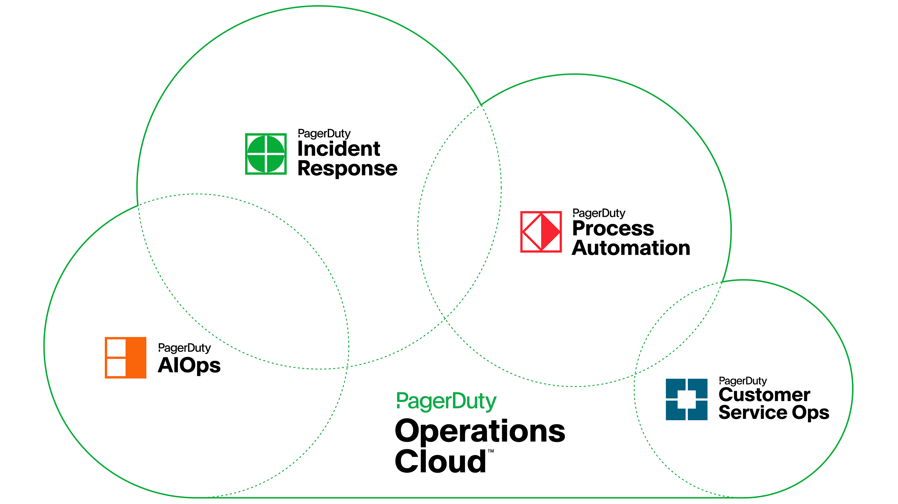

危机响应操作
实施你的危机计划#
实施你的危机计划首先需要进行实际的改变，确保你拥有所需的一切，以你需要的方式，在你需要的时间。例如，你的更广泛的危机管理计划在危机情况下对于团队来说过于繁琐，难以快速查找答案。另一方面，操作手册是更大计划的更集中版本，使它们更容易执行、测试和维护。它们也是基于场景的，为你提供特定的参数、考虑因素和任务。
一旦你创建了这些关键资源，集中它们并跟踪最新版本可能会很困难。PagerDuty通过允许你将操作手册、操作手册、政策和任何其他危机响应文档链接添加到你定义的PagerDuty服务中，使这变得容易。

危机分类方案#
在半夜用PagerDuty警报唤醒你的执行危机领导团队应该是极其罕见的事件。制定一个分类方案来评估事件的实际或预期重要性将帮助你避免“狼来了”的情况。一个简单的等级如低、中、高或级别1、2、3可以有效。
在PagerDuty中，你可以使用事件优先级功能添加你的危机“实质影响级别”。记住，并非所有危机一开始就是危机。它可能从持续的事件发展而来，因此提前确定升级阈值（例如，90分钟无空调，24小时无直接联系，收入风险超过10万美元等）与排名同样重要。

一旦你定义了优先级，你就可以开始利用PagerDuty通过集成和事件工作流程自动化你的危机响应部分。你可以与Slack、Teams或Zoom集成以创建通信渠道。你可以从模板自动发布到内部状态页面。你可以自动发起利益相关者警报或订阅等。

在危机情况下，时间节省至关重要。减少平均响应时间并联系到正确的人是你的团队在危机开始时可以采取的最关键行动。
危机声明#
你的危机响应团队在危机中是否与正常业务情况下运作相同？你的答案应该是否定的。在“危机模式”下运作应该是独特的，因为所有行动和决策都被放大，节奏更快，及时决策至关重要，问题的复杂性更大，风险更高等。
危机团队领导者需要清楚明确地发出信号，表明思维和处理方式已经转变。还有什么比通过PagerDuty警报更好的方式来发出这种转变的信号呢？事件优先级功能是一个简单的方式，以不那么公开的方式向必要的利益相关者宣布这一声明。宣布响应结束对于过渡到正常或新的做事方式也很重要，这可以通过解决警报在你危机服务上创建的警报或发布到内部状态页面来完成。
危机响应管理操作#
如果你一直遵循到这里，你基本上已经了解了PagerDuty实例在危机响应中的来龙去脉。在你的响应过程中，你不希望担心如何联系危机团队领导者，或者你应该使用哪个会议桥，或者你的最新操作手册位于何处。操作方面的事情应该自动运行。除了PagerDuty内置的警报功能外，该平台还有700多个集成，并且通过API还可以实现更多集成，因此你可以引入现有的技术堆栈。
在你的服务中为危机响应添加集成至少应包括电子邮件集成、与Slack、Google Chat等的即时消息集成以及Zoom、Microsoft Teams等的视频会议工具。这种标准组合使你能够通过多种方式（例如，网络、移动、电子邮件、API和即时消息）触发警报，并通知或建议你的执行危机领导团队有问题（例如，通过电子邮件、短信、推送或语音的PagerDuty警报，自动群组频道消息和订阅到服务）。
鉴于PagerDuty Operations Cloud的范围，你可能不是组织内唯一通过该平台运行其操作的团队。你的客户服务组织可能与你的技术操作组织一起使用该平台。因此，在触发警报、添加笔记和发布状态页面时，你希望部署一些技巧，以保持适当的隐私和合规级别。
